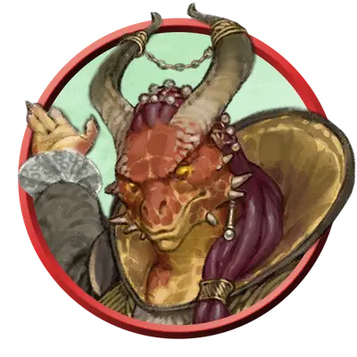

Одарённый дворянин
Noble Prodigy
Средний или Маленький Гуманоид, Нейтральный

Класс Защиты 16 Инициатива +7 (17)
Хиты 148 (27к8 + 27)
Скорость 30 футов
| мод | спас | ||
|---|---|---|---|
| СИЛ | 8 | −1 | −1 |
| ЛОВ | 16 | +3 | +7 |
| ТЕЛ | 12 | +1 | +5 |
| мод | спас | ||
|---|---|---|---|
| ИНТ | 15 | +2 | +2 |
| МДР | 14 | +2 | +6 |
| ХАР | 19 | +4 | +8 |
Чувства пассивное Восприятие 16
Языки Общий
Опасность 10 (5 900 опыта; БВ +4)
Действия
Мультиатака. Дворянин совершает три атаки Обольстительным ударом.
Обольстительный удар. Бросок рукопашной или дальнобойной атаки: +8, досягаемость 5 фт. или дистанция 60 фт. Попадание: 18 (4к6 + 4) Психического урона, и цель Очарована до начала следующего хода дворянина.
Сотворение заклинаний. Дворянин сотворяет одно из следующих заклинаний, не нуждаясь в Материальных компонентах (заклинательная характеристика — Харизма, Сл спасброска заклинаний 16):
Неограниченно: Волшебная рука, Доспехи мага, КЗ, Малая иллюзия
1/день каждое: Дребезги, версия 7-го уровня, Наблюдение, Обнаружение мыслей, Полёт, Помутнение разума
Реакции
Щит (2/день). Дворянин сотворяет Щит в ответ на условие заклинания (заклинательная характеристика — та же, что для Сотворения заклинаний).
Бонус мастерства +4
Среда обитания Любая
Сокровища Личные
Дворяне
Аристократы и богачи
Дворяне — существа из широкого слоя общества, обладающие значительным влиянием. Среди них можно встретить как правителей, так и богатых торговцев, чёрствых бюрократов и праздную элиту.
Одарённые дворяне происходят из рода легендарного героя, полубога, дракона или другого предка, от которого они получили свои магические способности. В некоторых аристократических кругах источник магии одарённого считается семейной тайной.